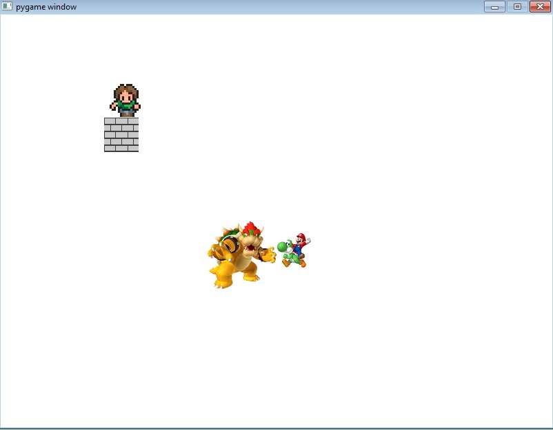

Python Content
Unit 1
Lab Runner
Description:
In the Lab Runner, we were able to put a character onto a window screen and allow it to move using the arrow keys. This was our very first game-like lab where we were able to learn about keeping the character within the boundaries of the window, how to code the controls, and size the window and character accordingly.
Math Runner Lab
Description:
In the Math Runner Lab, we coded a series of math functions that would output a certain number depending on what was inputted. We learned how to use strings, integers, and math symbols in our coding. We also learned to determine when to use strings or just numbers.
Unit 2
Assignment 1

Description:
In Assignment 1, we made another controllable sprite and another obstacle that would stop the characters when they collided with the obstacles. We were able to review how to code the controls for characters and use collision coding in order to limit what the characters can and can't do.
Assignment 2
Description:
In Assignment 2, we made a quick game that allows the player to jump over obstacles that would either end the game or deduct points and special items that would greatly increase the score. This allowed us to learn how to code positions, automatic movement, and automatic placement when the moving sprites reached past the window. This also allowed us to learn how to alter the score depending on what is happening through collisions between different objects.
Unit 3
Assignment 3
Description:
In Assignment 3, we made a game that made the player move around and collect randomly positioned coins within a set amount of time. Skills that we learned include loops and conditions that controlled time and the ability to set an object's position to a random location every time the main character makes contact with it and then increase the score. We also learned how to set an ending condition where when the time ends, the game ends as well.
Unit 4
Dodgerunner Lab
Description:
In the Dodgerunner lab, we created a game of which the goal was to reach the other side of the path without colliding with any enemies, kind of like frogger. Skills that we learned from this lab include more collisions between the character and enemies, the ability to randomly change an object's position of which the object is continuously moving, as well as setting the end game condition as going to a specific location rather than obtaining a set amount of score.
Python Final Project
Description:
In my python final project, I used elements that I learned from previous labs and expanded upon them. I first added randomly located rocks to set the playfield. I then added enemies that would continually move in random locations. I was able to learn a couple new skills such as increasing the difficulty of the game after a set amount of score has been obtained, and I was also able to keep score so that players can continue after beating the main game to try for the highest score possible.